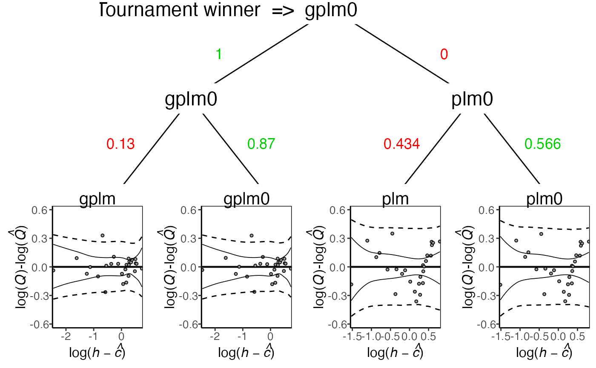
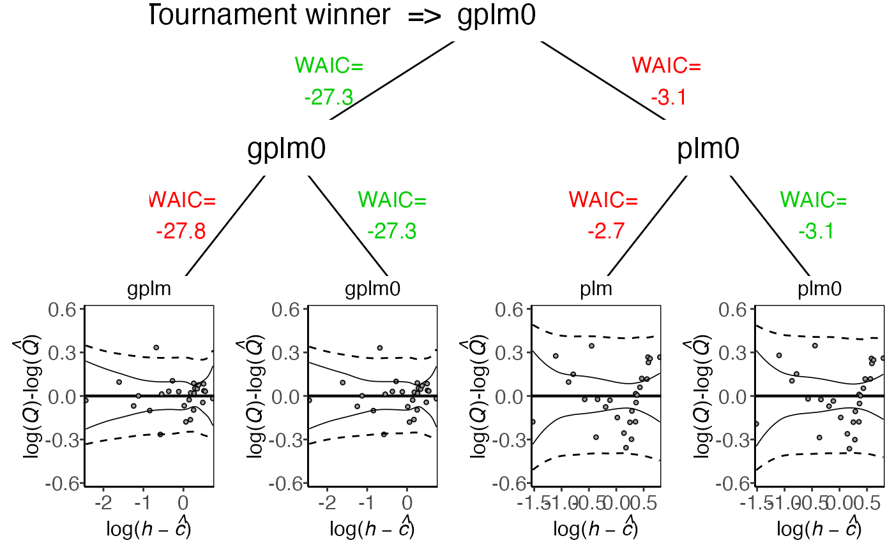

Compare the four models from the tournament object in multiple ways
# S3 method for tournament
plot(x, type = "tournament_results", transformed = FALSE, ...)an object of class "tournament"
a character denoting what type of plot should be drawn. Possible types are
"deviance" to plot the deviance of the four models.
"rating_curve" to plot the rating curve.
"rating_curve_mean" to plot the posterior mean of the rating curve.
"f" to plot the power-law exponent.
"sigma_eps" to plot the standard deviation on the data level.
"residuals" to plot the log residuals.
"tournament_results" to plot tournament results visually, game for game.
a logical value indicating whether the quantity should be plotted on a transformed scale used during the Bayesian inference. Defaults to FALSE.
further arguments passed to other methods.
No return value, called for side effects
tournament to run a discharge rating curve tournament and summary.tournament for summaries.
# \donttest{
data(krokfors)
set.seed(1)
t_obj <- tournament(formula=Q~W,data=krokfors,num_cores=2)
#> Running tournament:
#> 25% - gplm finished
#> 50% - gplm0 finished
#> 75% - plm finished
#> 100% - plm0 finished
plot(t_obj)
plot(t_obj,transformed=TRUE)

plot(t_obj,type='deviance')
plot(t_obj,type='f')
plot(t_obj,type='sigma_eps')
plot(t_obj,type='residuals')
plot(t_obj,type='tournament_results')

# }